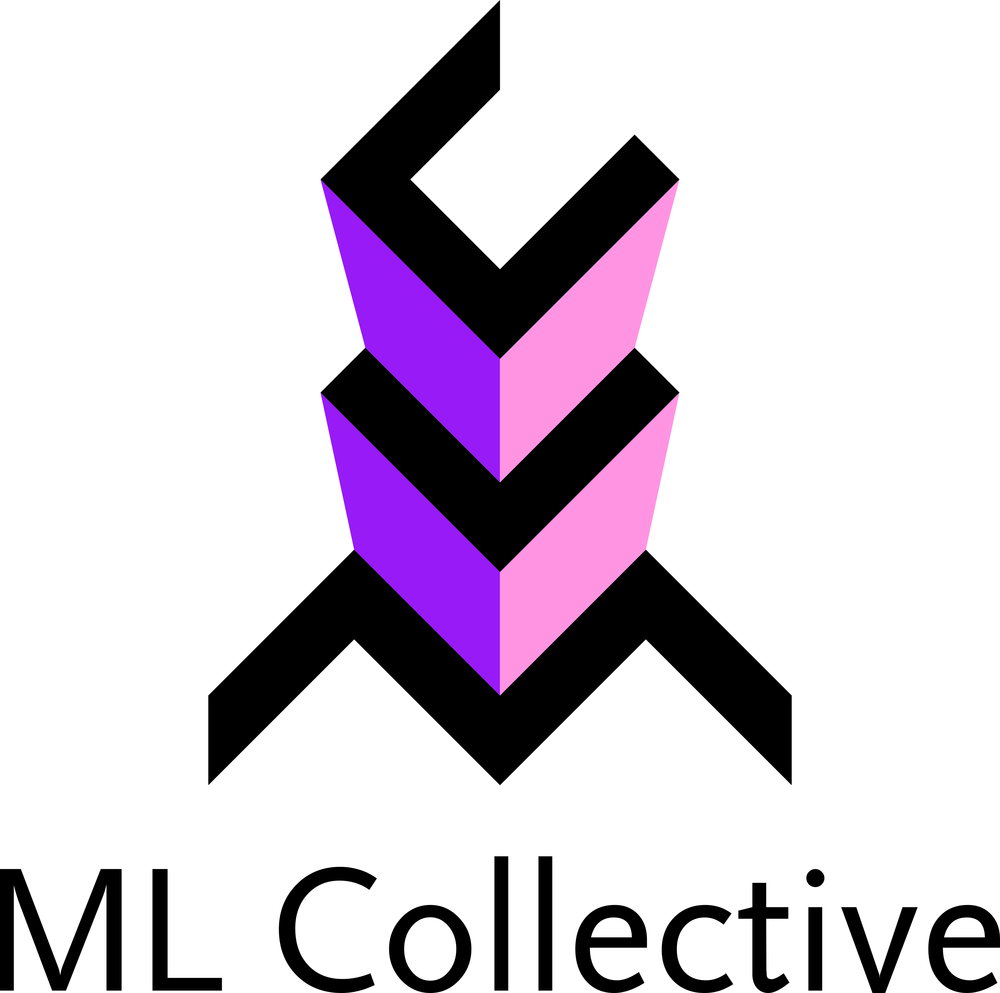
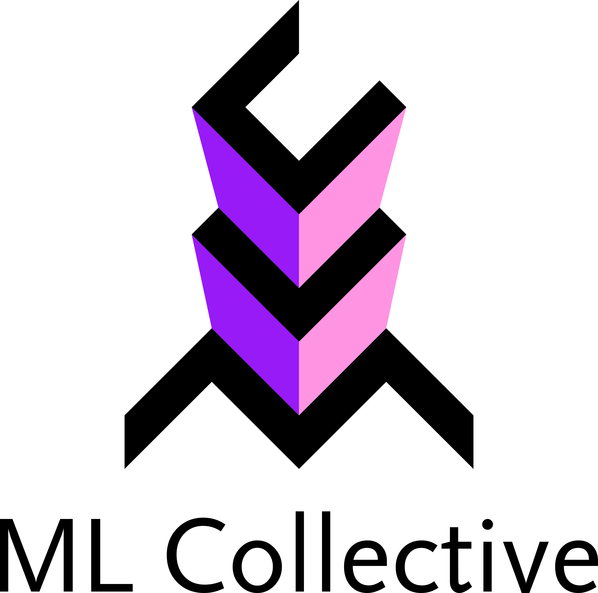

Generative AI + Law (GenLaw) ’23
We are very excited to announce the inaugural Workshop on Generative AI and Law (GenLaw ’23)! Please join us in Honolulu, Hawai’i at ICML ’23, where we’ll be bringing together experts in privacy, ML, policy, and law to discuss the intellectual property (IP) and privacy challenges that generative AI raises.
Read our introductory, explainers here on the copyright issues generative AI raises.

|
Workshop date: |
“Talkin’ ’Bout AI Generation: Copyright and the Generative-AI Supply Chain”. July 2023. (to appear, Journal of the Copyright Society) [ssrn][blog] |
About GenLaw
Progress in generative AI depends not only on better model architectures, but on terabytes of scraped Flickr images, Wikipedia pages, Stack Overflow answers, and websites. But generative models ingest vast quantities of intellectual property (IP), which they can memorize and regurgitate verbatim. Several recently-filed lawsuits relate such memorization to copyright infringement. These lawsuits will lead to policies and legal rulings that define our ability, as ML researchers and practitioners, to acquire training data, and our responsibilities towards data owners and curators.
AI researchers will increasingly operate in a legal environment that is keenly interested in their work — an environment that may require future research into model architectures that conform to legal requirements. Understanding the law and contributing to its development will enable us to create safer, better, and practically useful models.
Our Workshop
We’re excited to share a series of tutorials from renowned experts in both ML and law and panel discussions, where researchers in both disciplines can engage in semi-moderated conversation.
Our workshop will begin to build a comprehensive and precise synthesis of the legal issues at play. Beyond IP, the workshop will also address privacy and liability for dangerous, discriminatory, or misleading and manipulative outputs. It will take place on 29 July 2023, in Ballroom B.
Schedule
Virtual poster session: 28 July 2023 on Gather Town at 8 am HT or 2 pm ET
| 9:00 | 9:15 | am | Welcome Organizers |
| 9:15 | 9:45 | am | “Some Nonobvious Observation About Copyright’s Scope For Generative AI Developers” Pamela Samuelson |
| 9:45 | 10:05 | am | “Is Training AI Copyright Infringement?” Mark Lemley |
| 10:05 | 10:40 | am | Coffee |
| 10:40 | 11:00 | am | “Where and when does the law fit into AI development and deployment?” Miles Brundage |
| 11:00 | 12:00 | pm | Panel on Intellectual Property Pamela Samuelson, Mark Lemley, Luis Villa, Katherine Lee (Moderated by Jack Balkin and A. Feder Cooper) |
| 12:00 | 1:30 | pm | Lunch |
| 1:30 | 1:45 | pm | “Artificial Intelligence and the First amendment” Jack Balkin |
| 1:45 | 2:15 | pm | Spotlights |
| 2:15 | 3:00 | pm | Posters |
| 3:00 | 3:30 | pm | Coffee |
| 3:30 | 3:45 | pm | “A Brief Introduction to Machine Learning & Memorization” Nicholas Carlini |
| 3:45 | 4:00 | pm | “What does Differential Privacy have to do with Copyright?” Gautam Kamath |
| 4:00 | 5:00 | pm | Panel on Privacy Kristen Vaccaro, Nicholas Carlini, Miles Brundage, Gautam Kamath, and Jack Balkin (Moderated by Katherine Lee and Deep Ganguli) |
Times refer to local time. (HT, UTC-10:00)
Speakers, Panelists & Moderators

Pamela Samuelson
Distinguished Professor of Law and Information University of California, Berkeley
Mark Lemley
Professor of Law Stanford Law School

Nicholas Carlini
Research Scientist Google Brain

Gautam Kamath
Assistant Professor University of Waterloo
Kristen Vaccaro
Assistant Professor University of California, San Diego

Luis Villa
Co-founder and General Counsel Tidelift

Miles Brundage
Head of Policy Research OpenAI

Jack M. Balkin
Professor Yale Law School
Organizer Information

Katherine Lee
Ph.D. Candidate Cornell University Department of Computer Science
kate.lee168@gmail.comKatherine’s work has provided essential empirical evidence and measurement for grounding discussions around concerns that language models, like CoPilot, are infringing copyright, and about how language models can respect an individuals’ right to privacy and control of their data. Additionally, she has proposed methods of reducing memorization. Her work has received recognition at ACL and USENIX.

A. Feder Cooper
Ph.D. Candidate Cornell University Department of Computer Science
afc78@cornell.eduCooper studies how to make more reliable conclusions when using ML methods in practice. This work has thus-far focused on empirically motivated, theoretically grounded problems in Bayesian inference, model selection, and deep learning. Cooper has published numerous papers at top ML conferences, interdisciplinary computing venues, and tech law journals. Much of this work has been recognized with spotlight and contributed talk awards. Cooper has also been recognized as a Rising Star in EECS (MIT, 2021).

Niloofar Mireshghallah
Post-Doctoral Researcher University of Washington, Paul G. Allen Center for Computer Science and Engineering
niloofar@cs.washington.eduNiloofar’s research aims at understanding learning and memorization patterns in large language models, probing these models for safety issues (such as bias), and providing tools to limit their leakage of private information. She is a recipient of the National Center for Women & IT (NCWIT) Collegiate award in 2020 for her work on privacy-preserving inference, a finalist for the Qualcomm Innovation Fellowship in 2021, and a recipient of the 2022 Rising Star in Adversarial ML award. She was a co-chair of the NAACL 2022 conference and has been a co-organizer for numerous successful workshops, including Distributed and Private ML (DpmL) at ICLR 2021, Federated Learning for NLP (FL4NLP) at ACL 2022, Private NLP at NAACL 2022 and Widening NLP at EMNLP 2021 and 2022

Madiha Z. Choksi
Ph.D. Student Cornell University Department of Information Science
mc2376@cornell.edu

James Grimmelmann
Professor of Digital and Information Law Cornell Law School and Cornell Tech
james.grimmelmann@cornell.eduJames Grimmelmann is the Tessler Family Professor of Digital and Information Law at Cornell Tech and Cornell Law School. He studies how laws regulating software affect freedom, wealth, and power. He helps lawyers and technologists understand each other, applying ideas from computer science to problems in law and vice versa. He is the author of the casebook Internet Law: Cases and Problems and of over fifty scholarly articles and essays on digital copyright, content moderation, search engine regulation, online governance, privacy on social networks, and other topics in computer and Internet law. He organized the D is for Digitize conference in 2009 on the copyright litigation over the Google Book Search project, the In re Books conference in 2012 on the legal and cultural future of books in the digital age, and the Speed conference in 2018 on the implications of radical technology-induced acceleration for law, society, and policy.

David Mimno
Associate Professor Cornell University Department of Information Science
mimno@cornell.eduDavid Mimno builds models and methodologies that empower researchers outside NLP to use language technology. He was general chair of the 2022 Text As Data conference at Cornell Tech and organized a workshop on topic models at NeurIPS. His work spans from education to the development of advanced new language technology driven by the needs of non-expert users. He is chief developer of the popular Mallet toolkit and is currently co-PI on the NEH-sponsored BERT for Humanists project. His work has been supported by the Sloan foundation and NSF

Deep Ganguli
Research Scientist Anthropic
deep@anthropic.comDeep Ganguli leads the Societal Impacts team at Anthropic, which designs experiments to measure both the capabilities and harms of large language models. He is on the program committee at FAccT ’23, and was formerly the Research Director at the Stanford Institute for Human Centered AI where he designed several successful and well-attended multidisciplinary workshops aimed to bridge the gap between technologists and humanists. Prior to this he was a Science Program Officer at the Chan Zuckerberg initiative, where he designed numerous workshops and conferences aimed to bring together software engineers and neuroscientists to address pressing questions about neurodegenerative diseases.

Ludwig Schubert
ludwig@cs.stanford.edu
Contact us
Reach the organizers at: genlaw.org@gmail.com
Or, join our mailing list at: genlaw@groups.google.com
GenLaw is grateful for support from the following sponsors and partners:


 
